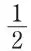

中文
中文D. Iwanenko
Editor’s Note
Chadwick’s hypothesis of the neutron rapidly drew attention from other physicists. Electrons were often expelled from the nucleus during radioactive decay, implying that they must reside somewhere within it. Here Russian physicist Dmitri Iwanenko suggested that electrons change their nature when inside the nucleus, losing their quantum-mechanical spin or magnetism. Inside the nucleus, they may be packed up inside neutrons or alpha particles (which were then still taken to be “elementary” particles along with protons and electrons). Indeed, beta decay involves the decomposition of a neutron into a proton and electron. 中文
DR. J. Chadwick’s explanation1 of the mysterious beryllium radiation is very attractive to theoretical physicists. Is it not possible to admit that neutrons play also an important rôle in the building of nuclei, the nuclei electrons being all packed in α-particles or neutrons? The lack of a theory of nuclei makes, of course, this assumption rather uncertain, but perhaps it sounds not so improbable if we remember that the nuclei electrons profoundly change their properties when entering into the nuclei, and lose, so to say, their individuality, for example, their spin and magnetic moment. 中文
The chief point of interest is how far the neutrons can be considered as elementary particles (something like protons or electrons). It is easy to calculate the number of α-particles, protons, and neutrons for a given nucleus, and form in this way an idea about the momentum of nucleus (assuming for the neutron a moment

). It is curious that beryllium nuclei do not possess free protons but only α-particles and neutrons. 中文
(129, 798; 1932)
D. Iwanenko: Physico-Technical Institute, Leningrad, April 21.
Reference:
1. Nature, 129, 312 (Feb. 27, 1932).